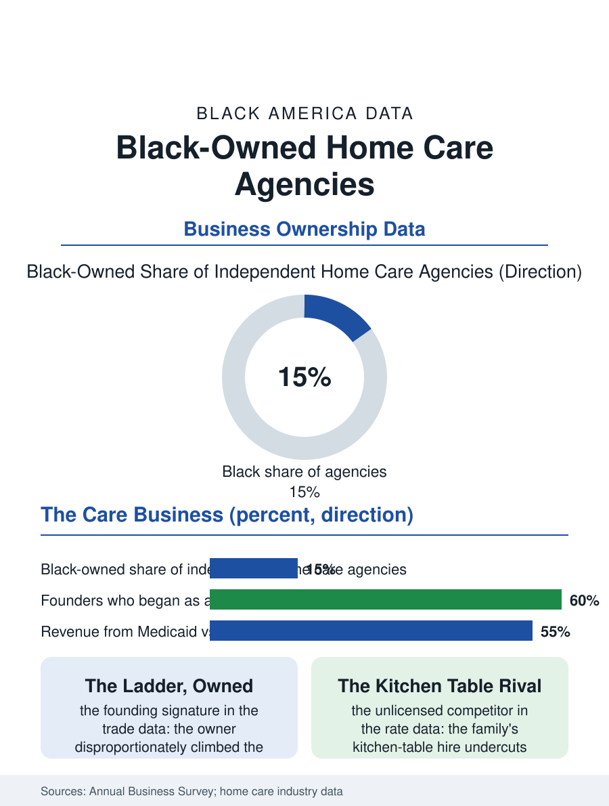

Black Business
The Ladder, Owned: Black-Owned Home Care Agencies
Nurses who climbed the care ladder into owning it run the agencies where the aging, caregiving, and mobility files meet as a business. The home care file.

Home care, the non-medical aide in the elder's home, is the health economy's fastest-growing service and one of its most Black-owned at the agency tier: the franchise and independent agencies that employ the aides of the workforce files include a substantial class of Black founders, many of them nurses who climbed the care ladder into ownership of the ladder itself. The business census counts the home care agencies in the thousands nationally. This article reads the home care agency file.
The Nurse's Ladder, Owned
The founding pattern is the file's signature: the agency's owner is disproportionately a woman whose own biography runs through the work, the aide's shifts, the nursing license earned at night, the agency founded with the referral relationships of a career, so that the firm's management carries the floor's knowledge in a way the industry's investor-founded chains do not, a difference the aides' retention data, the industry's chronic wound, registers in the established independents' favor. The business model is the spread the cleaning file's owners also know, the client's hourly rate against the aide's wage, out of which the agency must fund the scheduling, the supervision, the insurance, and the compliance the state license demands, a spread the Medicaid programs' rates set from below in the public segment and the private-pay market's affluence sets from above in the other, so that the agency's payer mix is its destiny in the pattern of the health business files. The franchise tier, the national home care brands' local units, admitted the Black owner on the franchise file's terms and produced a visible class of multi-unit operators in the Black metros, their territories drawn on the map of the aging file's demand.
Medicaid, Private Pay, and the Middle
The payer file divides the market into the three Americas of the aging data: the private-pay client whose assets fund the agency's best rates and whose demand concentrates in the affluent suburbs the Black agency may not sit in; the Medicaid waiver client whose care the state buys at its administered rate in the community the Black agency serves, at volumes whose reliability is the rate's compensation; and the long-term care insurance's small, paperwork-heavy segment between them. The agency's growth path in the trade data runs on the referral sources, the hospital discharge planners and the elder law attorneys and the churches, whose trust the rooted agency holds as its book, and on the aide workforce's stability, the agency that keeps its aides winning the reliability contest that is the service's whole product. The regulatory file, the state licensure of agencies and the background and training standards for the aides, is tightening on the schedule of the industry's scandals, each compliance round raising the floor the informal market, the privately hired aide of the gray economy, undercuts, so that the licensed agency's competition is substantially the unlicensed arrangement the family makes at the kitchen table, priced without the insurance the agency's rate must carry.
Care as the Family Business
The home care file closes on the agency's place in the care economy's whole circuit, because the Black-owned agency is where several of this atlas's files meet as a business: the aging population's need, the caregiving workforce's labor, the nurse's mobility, and the community's preference for the care that comes from its own, assembled into a firm whose product is trust at the elder's front door. The succession and sale file follows the industry's consolidation, the private equity platforms rolling up the agencies at multiples the founders of the first generation are now weighing against the family's next operator, in the pattern of the plumbing and cleaning files. The census counts the agencies in the home health and personal care categories, the Black-owned share of the independent tier among the highest in the health business files. The file's last entry is the intake visit: the founder herself at the new client's table, doing the assessment her license and her biography both qualify her for, in the neighborhood where she once made the same visits as the aide, which is the ladder's whole argument, sat down at last on the ownership side of the clipboard. The clipboard, finally, is hers.
More in Black Business
Black-Owned Businesses: Counts, Receipts, and the Representation Gap
About 161,000 Black-owned employer firms and three million solo ventures: how the Census Bureau counts Black business ownership, where firms concentrate, and the gap between population share and business share.
Black Median Net Worth: The Wealth Gap in Federal Reserve Data
The Federal Reserve puts Black median family net worth at $44,900, against $285,000 for White families — about 16 cents on the dollar. The widest gap in economic data.
Black Buying Power: The $1.8 Trillion Consumer Economy
Black buying power is estimated at about $1.8 trillion — larger than the economy of most nations. What the figure measures, who produces it, and what it buys.
Source: U.S. Census Bureau, Annual Business Survey for home health and personal care services; Home Care Association of America industry data.